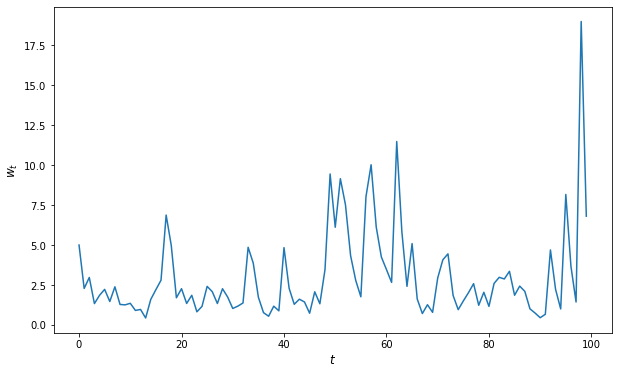

<!DOCTYPE html>

<html>
  <head>
    <meta charset="utf-8" />
    <meta name="viewport" content="width=device-width, initial-scale=1.0">
    <title>13. Parallelization &#8212; Python Programming for Economics and Finance</title>
    <link rel="stylesheet" href="_static/quantecon-book-theme.css" type="text/css" />
    <link rel="stylesheet" href="_static/pygments.css" type="text/css" />
    <link rel="stylesheet" type="text/css" href="_static/togglebutton.css" />
    <link rel="stylesheet" type="text/css" href="_static/copybutton.css" />
    <link rel="stylesheet" type="text/css" href="_static/mystnb.css" />
    <link rel="stylesheet" type="text/css" href="_static/sphinx-thebe.css" />
    <link rel="stylesheet" type="text/css" href="_static/exercise.css" />
    <link rel="stylesheet" type="text/css" href="_static/panels-main.c949a650a448cc0ae9fd3441c0e17fb0.css" />
    <link rel="stylesheet" type="text/css" href="_static/panels-variables.06eb56fa6e07937060861dad626602ad.css" />
    <script id="documentation_options" data-url_root="./" src="_static/documentation_options.js"></script>
    <script src="_static/quantecon-book-theme.js"></script>
    <script src="_static/jquery.js"></script>
    <script src="_static/underscore.js"></script>
    <script src="_static/doctools.js"></script>
    <script src="_static/language_data.js"></script>
    <script src="_static/togglebutton.js"></script>
    <script src="_static/clipboard.min.js"></script>
    <script src="_static/copybutton.js"></script>
    <script src="_static/quantecon-book-theme.js"></script>
    <script >var togglebuttonSelector = '.toggle, .admonition.dropdown, .tag_hide_input div.cell_input, .tag_hide-input div.cell_input, .tag_hide_output div.cell_output, .tag_hide-output div.cell_output, .tag_hide_cell.cell, .tag_hide-cell.cell';</script>
    <script src="_static/sphinx-book-theme.be0a4a0c39cd630af62a2fcf693f3f06.js"></script>
    <script async="async" src="https://cdnjs.cloudflare.com/ajax/libs/mathjax/2.7.7/latest.js?config=TeX-AMS-MML_HTMLorMML"></script>
    <script type="text/x-mathjax-config">MathJax.Hub.Config({"tex2jax": {"inlineMath": [["\\(", "\\)"]], "displayMath": [["\\[", "\\]"]], "processRefs": false, "processEnvironments": false}})</script>
    <script async="async" src="https://unpkg.com/thebelab@latest/lib/index.js"></script>
    <script >
        const thebe_selector = ".thebe"
        const thebe_selector_input = "pre"
        const thebe_selector_output = ".output"
    </script>
    <script async="async" src="_static/sphinx-thebe.js"></script>
    <link rel="shortcut icon" href="_static/qe-logo.png"/>
    <link rel="index" title="Index" href="genindex.html" />
    <link rel="search" title="Search" href="search.html" />
    <link rel="next" title="14. Pandas" href="pandas.html" />
    <link rel="prev" title="12. Numba" href="numba.html" />


  </head>
<body>


    <span id="top"></span>

    <div class="wrapper">

        <div class="main">

            <div class="page">

                <div class="page__toc">

                    <div class="inner">

                        
                        <div class="page__toc-header">
                            On this page
                        </div>


                        <nav id="bd-toc-nav" class="page__toc-nav">

                            <ul class="nav section-nav flex-column">
                                
                                <li class="nav-item toc-entry toc-h2">
                                    <a href="#overview" class="nav-link">Overview</a>
                                </li>
                                
                                <li class="nav-item toc-entry toc-h2">
                                    <a href="#types-of-parallelization" class="nav-link">Types of Parallelization</a><ul class="nav section-nav flex-column">
                                        
                                <li class="nav-item toc-entry toc-h3">
                                    <a href="#multiprocessing" class="nav-link">Multiprocessing</a>
                                </li>
                                
                                <li class="nav-item toc-entry toc-h3">
                                    <a href="#multithreading" class="nav-link">Multithreading</a>
                                </li>
                                
                                <li class="nav-item toc-entry toc-h3">
                                    <a href="#advantages-and-disadvantages" class="nav-link">Advantages and Disadvantages</a>
                                </li>
                                
                                    </ul>
                                </li>
                                
                                <li class="nav-item toc-entry toc-h2">
                                    <a href="#implicit-multithreading-in-numpy" class="nav-link">Implicit Multithreading in NumPy</a><ul class="nav section-nav flex-column">
                                        
                                <li class="nav-item toc-entry toc-h3">
                                    <a href="#a-matrix-operation" class="nav-link">A Matrix Operation</a>
                                </li>
                                
                                <li class="nav-item toc-entry toc-h3">
                                    <a href="#a-multithreaded-ufunc" class="nav-link">A Multithreaded Ufunc</a>
                                </li>
                                
                                <li class="nav-item toc-entry toc-h3">
                                    <a href="#a-comparison-with-numba" class="nav-link">A Comparison with Numba</a>
                                </li>
                                
                                <li class="nav-item toc-entry toc-h3">
                                    <a href="#multithreading-a-numba-ufunc" class="nav-link">Multithreading a Numba Ufunc</a>
                                </li>
                                
                                    </ul>
                                </li>
                                
                                <li class="nav-item toc-entry toc-h2">
                                    <a href="#multithreaded-loops-in-numba" class="nav-link">Multithreaded Loops in Numba</a><ul class="nav section-nav flex-column">
                                        
                                <li class="nav-item toc-entry toc-h3">
                                    <a href="#a-warning" class="nav-link">A Warning</a>
                                </li>
                                
                                    </ul>
                                </li>
                                
                                <li class="nav-item toc-entry toc-h2">
                                    <a href="#exercises" class="nav-link">Exercises</a><ul class="nav section-nav flex-column">
                                        
                                <li class="nav-item toc-entry toc-h3">
                                    <a href="#exercise-1" class="nav-link">Exercise 1</a>
                                </li>
                                
                                    </ul>
                                </li>
                                
                                <li class="nav-item toc-entry toc-h2">
                                    <a href="#solutions" class="nav-link">Solutions</a><ul class="nav section-nav flex-column">
                                        
                                <li class="nav-item toc-entry toc-h3">
                                    <a href="#id1" class="nav-link">Exercise 1</a>
                                </li>
                                
                                    </ul>
                                </li>
                                
                            </ul>

                            <p>
                                
                                    
                                    <a href=https://quantecon.org></a>
                                    
                                
                            </p>

                        </nav>

                        <div class="page__toc-footer">
                            
                            
                            <p><a href="#top"><strong>Back to top</strong></a></p>
                        </div>

                    </div>

                </div>

                <div class="page__header">

                    <div class="page__header-copy">

                        <p class="page__header-heading"><a href="intro.html">Python Programming for Economics and Finance</a></p>

                        <p class="page__header-subheading">Parallelization</p>

                    </div>

                    <p class="page__header-authors">Thomas J. Sargent & John Stachurski</p>

                </div> <!-- .page__header -->


                
                <main class="page__content" role="main">
                    
                    <div>
                        
  <div id="qe-notebook-header" align="right" style="text-align:right;">
        <a href="https://quantecon.org/" title="quantecon.org">
                
        </a>
</div><div class="section" id="parallelization">
<h1><a class="toc-backref" href="#id2"><span class="section-number">13. </span>Parallelization</a><a class="headerlink" href="#parallelization" title="Permalink to this headline">¶</a></h1>
<div class="contents topic" id="contents">
<p class="topic-title">Contents</p>
<ul class="simple">
<li><p><a class="reference internal" href="#parallelization" id="id2">Parallelization</a></p>
<ul>
<li><p><a class="reference internal" href="#overview" id="id3">Overview</a></p></li>
<li><p><a class="reference internal" href="#types-of-parallelization" id="id4">Types of Parallelization</a></p></li>
<li><p><a class="reference internal" href="#implicit-multithreading-in-numpy" id="id5">Implicit Multithreading in NumPy</a></p></li>
<li><p><a class="reference internal" href="#multithreaded-loops-in-numba" id="id6">Multithreaded Loops in Numba</a></p></li>
<li><p><a class="reference internal" href="#exercises" id="id7">Exercises</a></p></li>
<li><p><a class="reference internal" href="#solutions" id="id8">Solutions</a></p></li>
</ul>
</li>
</ul>
</div>
<p>In addition to what’s in Anaconda, this lecture will need the following libraries:</p>
<div class="cell tag_hide-output docutils container">
<div class="cell_input docutils container">
<div class="highlight-ipython3 notranslate"><div class="highlight"><pre><span></span><span class="o">!</span>conda install -y quantecon
</pre></div>
</div>
</div>
<div class="cell_output docutils container">
<div class="output stream highlight-myst-ansi notranslate"><div class="highlight"><pre><span></span>Collecting package metadata (current_repodata.json): - 
</pre></div>
</div>
<div class="output stream highlight-myst-ansi notranslate"><div class="highlight"><pre><span></span>\ 
</pre></div>
</div>
<div class="output stream highlight-myst-ansi notranslate"><div class="highlight"><pre><span></span>| 
</pre></div>
</div>
<div class="output stream highlight-myst-ansi notranslate"><div class="highlight"><pre><span></span>/ 
</pre></div>
</div>
<div class="output stream highlight-myst-ansi notranslate"><div class="highlight"><pre><span></span>- 
</pre></div>
</div>
<div class="output stream highlight-myst-ansi notranslate"><div class="highlight"><pre><span></span>\ 
</pre></div>
</div>
<div class="output stream highlight-myst-ansi notranslate"><div class="highlight"><pre><span></span>| 
</pre></div>
</div>
<div class="output stream highlight-myst-ansi notranslate"><div class="highlight"><pre><span></span>/ 
</pre></div>
</div>
<div class="output stream highlight-myst-ansi notranslate"><div class="highlight"><pre><span></span>- 
</pre></div>
</div>
<div class="output stream highlight-myst-ansi notranslate"><div class="highlight"><pre><span></span>\ 
</pre></div>
</div>
<div class="output stream highlight-myst-ansi notranslate"><div class="highlight"><pre><span></span>done
Solving environment: / 
</pre></div>
</div>
<div class="output stream highlight-myst-ansi notranslate"><div class="highlight"><pre><span></span>- 
</pre></div>
</div>
<div class="output stream highlight-myst-ansi notranslate"><div class="highlight"><pre><span></span>\ 
</pre></div>
</div>
<div class="output stream highlight-myst-ansi notranslate"><div class="highlight"><pre><span></span>| 
</pre></div>
</div>
<div class="output stream highlight-myst-ansi notranslate"><div class="highlight"><pre><span></span>/ 
</pre></div>
</div>
<div class="output stream highlight-myst-ansi notranslate"><div class="highlight"><pre><span></span>- 
</pre></div>
</div>
<div class="output stream highlight-myst-ansi notranslate"><div class="highlight"><pre><span></span>\ 
</pre></div>
</div>
<div class="output stream highlight-myst-ansi notranslate"><div class="highlight"><pre><span></span>| 
</pre></div>
</div>
<div class="output stream highlight-myst-ansi notranslate"><div class="highlight"><pre><span></span>/ 
</pre></div>
</div>
<div class="output stream highlight-myst-ansi notranslate"><div class="highlight"><pre><span></span>- 
</pre></div>
</div>
<div class="output stream highlight-myst-ansi notranslate"><div class="highlight"><pre><span></span>\ 
</pre></div>
</div>
<div class="output stream highlight-myst-ansi notranslate"><div class="highlight"><pre><span></span>| 
</pre></div>
</div>
<div class="output stream highlight-myst-ansi notranslate"><div class="highlight"><pre><span></span>/ 
</pre></div>
</div>
<div class="output stream highlight-myst-ansi notranslate"><div class="highlight"><pre><span></span>- 
</pre></div>
</div>
<div class="output stream highlight-myst-ansi notranslate"><div class="highlight"><pre><span></span>\ 
</pre></div>
</div>
<div class="output stream highlight-myst-ansi notranslate"><div class="highlight"><pre><span></span>| 
</pre></div>
</div>
<div class="output stream highlight-myst-ansi notranslate"><div class="highlight"><pre><span></span>done
</pre></div>
</div>
<div class="output stream highlight-myst-ansi notranslate"><div class="highlight"><pre><span></span># All requested packages already installed.
</pre></div>
</div>
</div>
</div>
<div class="section" id="overview">
<h2><a class="toc-backref" href="#id3"><span class="section-number">13.1. </span>Overview</a><a class="headerlink" href="#overview" title="Permalink to this headline">¶</a></h2>
<p>The growth of CPU clock speed (i.e., the speed at which a single chain of logic can
be run) has slowed dramatically in recent years.</p>
<p>This is unlikely to change in the near future, due to inherent physical
limitations on the construction of chips and circuit boards.</p>
<p>Chip designers and computer programmers have responded to the slowdown by
seeking a different path to fast execution: parallelization.</p>
<p>Hardware makers have increased the number of cores (physical CPUs) embedded in each machine.</p>
<p>For programmers, the challenge has been to exploit these multiple CPUs by running many processes in parallel (i.e., simultaneously).</p>
<p>This is particularly important in scientific programming, which requires handling</p>
<ul class="simple">
<li><p>large amounts of data and</p></li>
<li><p>CPU intensive simulations and other calculations.</p></li>
</ul>
<p>In this lecture we discuss parallelization for scientific computing, with a focus on</p>
<ol class="simple">
<li><p>the best tools for parallelization in Python and</p></li>
<li><p>how these tools can be applied to quantitative economic problems.</p></li>
</ol>
<p>Let’s start with some imports:</p>
<div class="cell docutils container">
<div class="cell_input docutils container">
<div class="highlight-ipython3 notranslate"><div class="highlight"><pre><span></span><span class="o">%</span><span class="k">matplotlib</span> inline
<span class="kn">import</span> <span class="nn">numpy</span> <span class="k">as</span> <span class="nn">np</span>
<span class="kn">import</span> <span class="nn">quantecon</span> <span class="k">as</span> <span class="nn">qe</span>
<span class="kn">import</span> <span class="nn">matplotlib.pyplot</span> <span class="k">as</span> <span class="nn">plt</span>
<span class="n">plt</span><span class="o">.</span><span class="n">rcParams</span><span class="p">[</span><span class="s1">&#39;figure.figsize&#39;</span><span class="p">]</span> <span class="o">=</span> <span class="p">(</span><span class="mi">10</span><span class="p">,</span><span class="mi">6</span><span class="p">)</span>
</pre></div>
</div>
</div>
</div>
</div>
<div class="section" id="types-of-parallelization">
<h2><a class="toc-backref" href="#id4"><span class="section-number">13.2. </span>Types of Parallelization</a><a class="headerlink" href="#types-of-parallelization" title="Permalink to this headline">¶</a></h2>
<p>Large textbooks have been written on different approaches to parallelization but we will keep a tight focus on what’s most useful to us.</p>
<p>We will briefly review the two main kinds of parallelization commonly used in
scientific computing and discuss their pros and cons.</p>
<div class="section" id="multiprocessing">
<h3><span class="section-number">13.2.1. </span>Multiprocessing<a class="headerlink" href="#multiprocessing" title="Permalink to this headline">¶</a></h3>
<p>Multiprocessing means concurrent execution of multiple processes using more than one processor.</p>
<p>In this context, a <strong>process</strong> is a chain of instructions (i.e., a program).</p>
<p>Multiprocessing can be carried out on one machine with multiple CPUs or on a
collection of machines connected by a network.</p>
<p>In the latter case, the collection of machines is usually called a
<strong>cluster</strong>.</p>
<p>With multiprocessing, each process has its own memory space, although the
physical memory chip might be shared.</p>
</div>
<div class="section" id="multithreading">
<h3><span class="section-number">13.2.2. </span>Multithreading<a class="headerlink" href="#multithreading" title="Permalink to this headline">¶</a></h3>
<p>Multithreading is similar to multiprocessing, except that, during execution, the threads all share the same memory space.</p>
<p>Native Python struggles to implement multithreading due to some <a class="reference external" href="https://wiki.python.org/moin/GlobalInterpreterLock">legacy design
features</a>.</p>
<p>But this is not a restriction for scientific libraries like NumPy and Numba.</p>
<p>Functions imported from these libraries and JIT-compiled code run in low level
execution environments where Python’s legacy restrictions don’t apply.</p>
</div>
<div class="section" id="advantages-and-disadvantages">
<h3><span class="section-number">13.2.3. </span>Advantages and Disadvantages<a class="headerlink" href="#advantages-and-disadvantages" title="Permalink to this headline">¶</a></h3>
<p>Multithreading is more lightweight because most system and memory resources
are shared by the threads.</p>
<p>In addition, the fact that multiple threads all access a shared pool of memory
is extremely convenient for numerical programming.</p>
<p>On the other hand, multiprocessing is more flexible and can be distributed
across clusters.</p>
<p>For the great majority of what we do in these lectures, multithreading will
suffice.</p>
</div>
</div>
<div class="section" id="implicit-multithreading-in-numpy">
<h2><a class="toc-backref" href="#id5"><span class="section-number">13.3. </span>Implicit Multithreading in NumPy</a><a class="headerlink" href="#implicit-multithreading-in-numpy" title="Permalink to this headline">¶</a></h2>
<p>Actually, you have already been using multithreading in your Python code,
although you might not have realized it.</p>
<p>(We are, as usual, assuming that you are running the latest version of
Anaconda Python.)</p>
<p>This is because NumPy cleverly implements multithreading in a lot of its
compiled code.</p>
<p>Let’s look at some examples to see this in action.</p>
<div class="section" id="a-matrix-operation">
<h3><span class="section-number">13.3.1. </span>A Matrix Operation<a class="headerlink" href="#a-matrix-operation" title="Permalink to this headline">¶</a></h3>
<p>The next piece of code computes the eigenvalues of a large number of randomly
generated matrices.</p>
<p>It takes a few seconds to run.</p>
<div class="cell docutils container">
<div class="cell_input docutils container">
<div class="highlight-ipython3 notranslate"><div class="highlight"><pre><span></span><span class="n">n</span> <span class="o">=</span> <span class="mi">20</span>
<span class="n">m</span> <span class="o">=</span> <span class="mi">1000</span>
<span class="k">for</span> <span class="n">i</span> <span class="ow">in</span> <span class="nb">range</span><span class="p">(</span><span class="n">n</span><span class="p">):</span>
    <span class="n">X</span> <span class="o">=</span> <span class="n">np</span><span class="o">.</span><span class="n">random</span><span class="o">.</span><span class="n">randn</span><span class="p">(</span><span class="n">m</span><span class="p">,</span> <span class="n">m</span><span class="p">)</span>
    <span class="n">λ</span> <span class="o">=</span> <span class="n">np</span><span class="o">.</span><span class="n">linalg</span><span class="o">.</span><span class="n">eigvals</span><span class="p">(</span><span class="n">X</span><span class="p">)</span>
</pre></div>
</div>
</div>
</div>
<p>Now, let’s look at the output of the htop system monitor on our machine while
this code is running:</p>
<div class="figure align-default">
<a class="reference internal image-reference" href="_images/htop_parallel_npmat.png"></a>
</div>
<p>We can see that 4 of the 8 CPUs are running at full speed.</p>
<p>This is because NumPy’s <code class="docutils literal notranslate"><span class="pre">eigvals</span></code> routine neatly splits up the tasks and
distributes them to different threads.</p>
</div>
<div class="section" id="a-multithreaded-ufunc">
<h3><span class="section-number">13.3.2. </span>A Multithreaded Ufunc<a class="headerlink" href="#a-multithreaded-ufunc" title="Permalink to this headline">¶</a></h3>
<p>Over the last few years, NumPy has managed to push this kind of multithreading
out to more and more operations.</p>
<p>For example, let’s return to a maximization problem <a class="reference internal" href="need_for_speed.html#ufuncs"><span class="std std-ref">discussed previously</span></a>:</p>
<div class="cell docutils container">
<div class="cell_input docutils container">
<div class="highlight-ipython3 notranslate"><div class="highlight"><pre><span></span><span class="k">def</span> <span class="nf">f</span><span class="p">(</span><span class="n">x</span><span class="p">,</span> <span class="n">y</span><span class="p">):</span>
    <span class="k">return</span> <span class="n">np</span><span class="o">.</span><span class="n">cos</span><span class="p">(</span><span class="n">x</span><span class="o">**</span><span class="mi">2</span> <span class="o">+</span> <span class="n">y</span><span class="o">**</span><span class="mi">2</span><span class="p">)</span> <span class="o">/</span> <span class="p">(</span><span class="mi">1</span> <span class="o">+</span> <span class="n">x</span><span class="o">**</span><span class="mi">2</span> <span class="o">+</span> <span class="n">y</span><span class="o">**</span><span class="mi">2</span><span class="p">)</span>

<span class="n">grid</span> <span class="o">=</span> <span class="n">np</span><span class="o">.</span><span class="n">linspace</span><span class="p">(</span><span class="o">-</span><span class="mi">3</span><span class="p">,</span> <span class="mi">3</span><span class="p">,</span> <span class="mi">5000</span><span class="p">)</span>
<span class="n">x</span><span class="p">,</span> <span class="n">y</span> <span class="o">=</span> <span class="n">np</span><span class="o">.</span><span class="n">meshgrid</span><span class="p">(</span><span class="n">grid</span><span class="p">,</span> <span class="n">grid</span><span class="p">)</span>
</pre></div>
</div>
</div>
</div>
<div class="cell docutils container">
<div class="cell_input docutils container">
<div class="highlight-ipython3 notranslate"><div class="highlight"><pre><span></span><span class="o">%</span><span class="k">timeit</span> np.max(f(x, y))
</pre></div>
</div>
</div>
<div class="cell_output docutils container">
<div class="output stream highlight-myst-ansi notranslate"><div class="highlight"><pre><span></span>918 ms ± 32.2 ms per loop (mean ± std. dev. of 7 runs, 1 loop each)
</pre></div>
</div>
</div>
</div>
<p>If you have a system monitor such as htop (Linux/Mac) or perfmon
(Windows), then try running this and then observing the load on your CPUs.</p>
<p>(You will probably need to bump up the grid size to see large effects.)</p>
<p>At least on our machine, the output shows that the operation is successfully
distributed across multiple threads.</p>
<p>This is one of the reasons why the vectorized code above is fast.</p>
</div>
<div class="section" id="a-comparison-with-numba">
<h3><span class="section-number">13.3.3. </span>A Comparison with Numba<a class="headerlink" href="#a-comparison-with-numba" title="Permalink to this headline">¶</a></h3>
<p>To get some basis for comparison for the last example, let’s try the same
thing with Numba.</p>
<p>In fact there is an easy way to do this, since Numba can also be used to
create custom <a class="reference internal" href="need_for_speed.html#ufuncs"><span class="std std-ref">ufuncs</span></a> with the <a class="reference external" href="http://numba.pydata.org/numba-doc/dev/user/vectorize.html">&#64;vectorize</a> decorator.</p>
<div class="cell docutils container">
<div class="cell_input docutils container">
<div class="highlight-ipython3 notranslate"><div class="highlight"><pre><span></span><span class="kn">from</span> <span class="nn">numba</span> <span class="kn">import</span> <span class="n">vectorize</span>

<span class="nd">@vectorize</span>
<span class="k">def</span> <span class="nf">f_vec</span><span class="p">(</span><span class="n">x</span><span class="p">,</span> <span class="n">y</span><span class="p">):</span>
    <span class="k">return</span> <span class="n">np</span><span class="o">.</span><span class="n">cos</span><span class="p">(</span><span class="n">x</span><span class="o">**</span><span class="mi">2</span> <span class="o">+</span> <span class="n">y</span><span class="o">**</span><span class="mi">2</span><span class="p">)</span> <span class="o">/</span> <span class="p">(</span><span class="mi">1</span> <span class="o">+</span> <span class="n">x</span><span class="o">**</span><span class="mi">2</span> <span class="o">+</span> <span class="n">y</span><span class="o">**</span><span class="mi">2</span><span class="p">)</span>

<span class="n">np</span><span class="o">.</span><span class="n">max</span><span class="p">(</span><span class="n">f_vec</span><span class="p">(</span><span class="n">x</span><span class="p">,</span> <span class="n">y</span><span class="p">))</span>  <span class="c1"># Run once to compile</span>
</pre></div>
</div>
</div>
<div class="cell_output docutils container">
<div class="output text_plain highlight-myst-ansi notranslate"><div class="highlight"><pre><span></span>0.9999992797121728
</pre></div>
</div>
</div>
</div>
<div class="cell docutils container">
<div class="cell_input docutils container">
<div class="highlight-ipython3 notranslate"><div class="highlight"><pre><span></span><span class="o">%</span><span class="k">timeit</span> np.max(f_vec(x, y))
</pre></div>
</div>
</div>
<div class="cell_output docutils container">
<div class="output stream highlight-myst-ansi notranslate"><div class="highlight"><pre><span></span>540 ms ± 20.9 ms per loop (mean ± std. dev. of 7 runs, 1 loop each)
</pre></div>
</div>
</div>
</div>
<p>At least on our machine, the difference in the speed between the
Numba version and the vectorized NumPy version shown above is not large.</p>
<p>But there’s quite a bit going on here so let’s try to break down what is
happening.</p>
<p>Both Numba and NumPy use efficient machine code that’s specialized to these
floating point operations.</p>
<p>However, the code NumPy uses is, in some ways, less efficient.</p>
<p>The reason is that, in NumPy, the operation <code class="docutils literal notranslate"><span class="pre">np.cos(x**2</span> <span class="pre">+</span> <span class="pre">y**2)</span> <span class="pre">/</span> <span class="pre">(1</span> <span class="pre">+</span> <span class="pre">x**2</span> <span class="pre">+</span> <span class="pre">y**2)</span></code> generates several intermediate arrays.</p>
<p>For example, a new array is created when <code class="docutils literal notranslate"><span class="pre">x**2</span></code> is calculated.</p>
<p>The same is true when <code class="docutils literal notranslate"><span class="pre">y**2</span></code> is calculated, and then <code class="docutils literal notranslate"><span class="pre">x**2</span> <span class="pre">+</span> <span class="pre">y**2</span></code> and so on.</p>
<p>Numba avoids creating all these intermediate arrays by compiling one
function that is specialized to the entire operation.</p>
<p>But if this is true, then why isn’t the Numba code faster?</p>
<p>The reason is that NumPy makes up for its disadvantages with implicit
multithreading, as we’ve just discussed.</p>
</div>
<div class="section" id="multithreading-a-numba-ufunc">
<h3><span class="section-number">13.3.4. </span>Multithreading a Numba Ufunc<a class="headerlink" href="#multithreading-a-numba-ufunc" title="Permalink to this headline">¶</a></h3>
<p>Can we get both of these advantages at once?</p>
<p>In other words, can we pair</p>
<ul class="simple">
<li><p>the efficiency of Numba’s highly specialized JIT compiled function and</p></li>
<li><p>the speed gains from parallelization obtained by NumPy’s implicit
multithreading?</p></li>
</ul>
<p>It turns out that we can, by adding some type information plus <code class="docutils literal notranslate"><span class="pre">target='parallel'</span></code>.</p>
<div class="cell docutils container">
<div class="cell_input docutils container">
<div class="highlight-ipython3 notranslate"><div class="highlight"><pre><span></span><span class="nd">@vectorize</span><span class="p">(</span><span class="s1">&#39;float64(float64, float64)&#39;</span><span class="p">,</span> <span class="n">target</span><span class="o">=</span><span class="s1">&#39;parallel&#39;</span><span class="p">)</span>
<span class="k">def</span> <span class="nf">f_vec</span><span class="p">(</span><span class="n">x</span><span class="p">,</span> <span class="n">y</span><span class="p">):</span>
    <span class="k">return</span> <span class="n">np</span><span class="o">.</span><span class="n">cos</span><span class="p">(</span><span class="n">x</span><span class="o">**</span><span class="mi">2</span> <span class="o">+</span> <span class="n">y</span><span class="o">**</span><span class="mi">2</span><span class="p">)</span> <span class="o">/</span> <span class="p">(</span><span class="mi">1</span> <span class="o">+</span> <span class="n">x</span><span class="o">**</span><span class="mi">2</span> <span class="o">+</span> <span class="n">y</span><span class="o">**</span><span class="mi">2</span><span class="p">)</span>

<span class="n">np</span><span class="o">.</span><span class="n">max</span><span class="p">(</span><span class="n">f_vec</span><span class="p">(</span><span class="n">x</span><span class="p">,</span> <span class="n">y</span><span class="p">))</span>  <span class="c1"># Run once to compile</span>
</pre></div>
</div>
</div>
<div class="cell_output docutils container">
<div class="output text_plain highlight-myst-ansi notranslate"><div class="highlight"><pre><span></span>0.9999992797121728
</pre></div>
</div>
</div>
</div>
<div class="cell docutils container">
<div class="cell_input docutils container">
<div class="highlight-ipython3 notranslate"><div class="highlight"><pre><span></span><span class="o">%</span><span class="k">timeit</span> np.max(f_vec(x, y))
</pre></div>
</div>
</div>
<div class="cell_output docutils container">
<div class="output stream highlight-myst-ansi notranslate"><div class="highlight"><pre><span></span>289 ms ± 16 ms per loop (mean ± std. dev. of 7 runs, 1 loop each)
</pre></div>
</div>
</div>
</div>
<p>Now our code runs significantly faster than the NumPy version.</p>
</div>
</div>
<div class="section" id="multithreaded-loops-in-numba">
<h2><a class="toc-backref" href="#id6"><span class="section-number">13.4. </span>Multithreaded Loops in Numba</a><a class="headerlink" href="#multithreaded-loops-in-numba" title="Permalink to this headline">¶</a></h2>
<p>We just saw one approach to parallelization in Numba, using the <code class="docutils literal notranslate"><span class="pre">parallel</span></code>
flag in <code class="docutils literal notranslate"><span class="pre">&#64;vectorize</span></code>.</p>
<p>This is neat but, it turns out, not well suited to many problems we consider.</p>
<p>Fortunately, Numba provides another approach to multithreading that will work
for us almost everywhere parallelization is possible.</p>
<p>To illustrate, let’s look first at a simple, single-threaded (i.e., non-parallelized) piece of code.</p>
<p>The code simulates updating the wealth <span class="math notranslate nohighlight">\(w_t\)</span> of a household via the rule</p>
<div class="math notranslate nohighlight">
\[
w_{t+1} = R_{t+1} s w_t + y_{t+1}
\]</div>
<p>Here</p>
<ul class="simple">
<li><p><span class="math notranslate nohighlight">\(R\)</span> is the gross rate of return on assets</p></li>
<li><p><span class="math notranslate nohighlight">\(s\)</span> is the savings rate of the household and</p></li>
<li><p><span class="math notranslate nohighlight">\(y\)</span> is labor income.</p></li>
</ul>
<p>We model both <span class="math notranslate nohighlight">\(R\)</span> and <span class="math notranslate nohighlight">\(y\)</span> as independent draws from a lognormal
distribution.</p>
<p>Here’s the code:</p>
<div class="cell docutils container">
<div class="cell_input docutils container">
<div class="highlight-ipython3 notranslate"><div class="highlight"><pre><span></span><span class="kn">from</span> <span class="nn">numpy.random</span> <span class="kn">import</span> <span class="n">randn</span>
<span class="kn">from</span> <span class="nn">numba</span> <span class="kn">import</span> <span class="n">njit</span>

<span class="nd">@njit</span>
<span class="k">def</span> <span class="nf">h</span><span class="p">(</span><span class="n">w</span><span class="p">,</span> <span class="n">r</span><span class="o">=</span><span class="mf">0.1</span><span class="p">,</span> <span class="n">s</span><span class="o">=</span><span class="mf">0.3</span><span class="p">,</span> <span class="n">v1</span><span class="o">=</span><span class="mf">0.1</span><span class="p">,</span> <span class="n">v2</span><span class="o">=</span><span class="mf">1.0</span><span class="p">):</span>
    <span class="sd">&quot;&quot;&quot;</span>
<span class="sd">    Updates household wealth.</span>
<span class="sd">    &quot;&quot;&quot;</span>

    <span class="c1"># Draw shocks</span>
    <span class="n">R</span> <span class="o">=</span> <span class="n">np</span><span class="o">.</span><span class="n">exp</span><span class="p">(</span><span class="n">v1</span> <span class="o">*</span> <span class="n">randn</span><span class="p">())</span> <span class="o">*</span> <span class="p">(</span><span class="mi">1</span> <span class="o">+</span> <span class="n">r</span><span class="p">)</span>
    <span class="n">y</span> <span class="o">=</span> <span class="n">np</span><span class="o">.</span><span class="n">exp</span><span class="p">(</span><span class="n">v2</span> <span class="o">*</span> <span class="n">randn</span><span class="p">())</span>

    <span class="c1"># Update wealth</span>
    <span class="n">w</span> <span class="o">=</span> <span class="n">R</span> <span class="o">*</span> <span class="n">s</span> <span class="o">*</span> <span class="n">w</span> <span class="o">+</span> <span class="n">y</span>
    <span class="k">return</span> <span class="n">w</span>
</pre></div>
</div>
</div>
</div>
<p>Let’s have a look at how wealth evolves under this rule.</p>
<div class="cell docutils container">
<div class="cell_input docutils container">
<div class="highlight-ipython3 notranslate"><div class="highlight"><pre><span></span><span class="n">fig</span><span class="p">,</span> <span class="n">ax</span> <span class="o">=</span> <span class="n">plt</span><span class="o">.</span><span class="n">subplots</span><span class="p">()</span>

<span class="n">T</span> <span class="o">=</span> <span class="mi">100</span>
<span class="n">w</span> <span class="o">=</span> <span class="n">np</span><span class="o">.</span><span class="n">empty</span><span class="p">(</span><span class="n">T</span><span class="p">)</span>
<span class="n">w</span><span class="p">[</span><span class="mi">0</span><span class="p">]</span> <span class="o">=</span> <span class="mi">5</span>
<span class="k">for</span> <span class="n">t</span> <span class="ow">in</span> <span class="nb">range</span><span class="p">(</span><span class="n">T</span><span class="o">-</span><span class="mi">1</span><span class="p">):</span>
    <span class="n">w</span><span class="p">[</span><span class="n">t</span><span class="o">+</span><span class="mi">1</span><span class="p">]</span> <span class="o">=</span> <span class="n">h</span><span class="p">(</span><span class="n">w</span><span class="p">[</span><span class="n">t</span><span class="p">])</span>

<span class="n">ax</span><span class="o">.</span><span class="n">plot</span><span class="p">(</span><span class="n">w</span><span class="p">)</span>
<span class="n">ax</span><span class="o">.</span><span class="n">set_xlabel</span><span class="p">(</span><span class="s1">&#39;$t$&#39;</span><span class="p">,</span> <span class="n">fontsize</span><span class="o">=</span><span class="mi">12</span><span class="p">)</span>
<span class="n">ax</span><span class="o">.</span><span class="n">set_ylabel</span><span class="p">(</span><span class="s1">&#39;$w_</span><span class="si">{t}</span><span class="s1">$&#39;</span><span class="p">,</span> <span class="n">fontsize</span><span class="o">=</span><span class="mi">12</span><span class="p">)</span>
<span class="n">plt</span><span class="o">.</span><span class="n">show</span><span class="p">()</span>
</pre></div>
</div>
</div>
<div class="cell_output docutils container">

</div>
</div>
<p>Now let’s suppose that we have a large population of households and we want to
know what median wealth will be.</p>
<p>This is not easy to solve with pencil and paper, so we will use simulation
instead.</p>
<p>In particular, we will simulate a large number of households and then
calculate median wealth for this group.</p>
<p>Suppose we are interested in the long-run average of this median over time.</p>
<p>It turns out that, for the specification that we’ve chosen above, we can
calculate this by taking a one-period snapshot of what has happened to median
wealth of the group at the end of a long simulation.</p>
<p>Moreover, provided the simulation period is long enough, initial conditions
don’t matter.</p>
<ul class="simple">
<li><p>This is due to something called ergodicity, which we will discuss <a class="reference external" href="https://python-intro.quantecon.org/finite_markov.html#Ergodicity">later on</a>.</p></li>
</ul>
<p>So, in summary, we are going to simulate 50,000 households by</p>
<ol class="simple">
<li><p>arbitrarily setting initial wealth to 1 and</p></li>
<li><p>simulating forward in time for 1,000 periods.</p></li>
</ol>
<p>Then we’ll calculate median wealth at the end period.</p>
<p>Here’s the code:</p>
<div class="cell docutils container">
<div class="cell_input docutils container">
<div class="highlight-ipython3 notranslate"><div class="highlight"><pre><span></span><span class="nd">@njit</span>
<span class="k">def</span> <span class="nf">compute_long_run_median</span><span class="p">(</span><span class="n">w0</span><span class="o">=</span><span class="mi">1</span><span class="p">,</span> <span class="n">T</span><span class="o">=</span><span class="mi">1000</span><span class="p">,</span> <span class="n">num_reps</span><span class="o">=</span><span class="mi">50_000</span><span class="p">):</span>

    <span class="n">obs</span> <span class="o">=</span> <span class="n">np</span><span class="o">.</span><span class="n">empty</span><span class="p">(</span><span class="n">num_reps</span><span class="p">)</span>
    <span class="k">for</span> <span class="n">i</span> <span class="ow">in</span> <span class="nb">range</span><span class="p">(</span><span class="n">num_reps</span><span class="p">):</span>
        <span class="n">w</span> <span class="o">=</span> <span class="n">w0</span>
        <span class="k">for</span> <span class="n">t</span> <span class="ow">in</span> <span class="nb">range</span><span class="p">(</span><span class="n">T</span><span class="p">):</span>
            <span class="n">w</span> <span class="o">=</span> <span class="n">h</span><span class="p">(</span><span class="n">w</span><span class="p">)</span>
        <span class="n">obs</span><span class="p">[</span><span class="n">i</span><span class="p">]</span> <span class="o">=</span> <span class="n">w</span>

    <span class="k">return</span> <span class="n">np</span><span class="o">.</span><span class="n">median</span><span class="p">(</span><span class="n">obs</span><span class="p">)</span>
</pre></div>
</div>
</div>
</div>
<p>Let’s see how fast this runs:</p>
<div class="cell docutils container">
<div class="cell_input docutils container">
<div class="highlight-ipython3 notranslate"><div class="highlight"><pre><span></span><span class="o">%%time</span>
<span class="n">compute_long_run_median</span><span class="p">()</span>
</pre></div>
</div>
</div>
<div class="cell_output docutils container">
<div class="output stream highlight-myst-ansi notranslate"><div class="highlight"><pre><span></span>CPU times: user 8.2 s, sys: 13.7 ms, total: 8.22 s
Wall time: 8.19 s
</pre></div>
</div>
<div class="output text_plain highlight-myst-ansi notranslate"><div class="highlight"><pre><span></span>1.831736272219736
</pre></div>
</div>
</div>
</div>
<p>To speed this up, we’re going to parallelize it via multithreading.</p>
<p>To do so, we add the <code class="docutils literal notranslate"><span class="pre">parallel=True</span></code> flag and change <code class="docutils literal notranslate"><span class="pre">range</span></code> to <code class="docutils literal notranslate"><span class="pre">prange</span></code>:</p>
<div class="cell docutils container">
<div class="cell_input docutils container">
<div class="highlight-ipython3 notranslate"><div class="highlight"><pre><span></span><span class="kn">from</span> <span class="nn">numba</span> <span class="kn">import</span> <span class="n">prange</span>

<span class="nd">@njit</span><span class="p">(</span><span class="n">parallel</span><span class="o">=</span><span class="kc">True</span><span class="p">)</span>
<span class="k">def</span> <span class="nf">compute_long_run_median_parallel</span><span class="p">(</span><span class="n">w0</span><span class="o">=</span><span class="mi">1</span><span class="p">,</span> <span class="n">T</span><span class="o">=</span><span class="mi">1000</span><span class="p">,</span> <span class="n">num_reps</span><span class="o">=</span><span class="mi">50_000</span><span class="p">):</span>

    <span class="n">obs</span> <span class="o">=</span> <span class="n">np</span><span class="o">.</span><span class="n">empty</span><span class="p">(</span><span class="n">num_reps</span><span class="p">)</span>
    <span class="k">for</span> <span class="n">i</span> <span class="ow">in</span> <span class="n">prange</span><span class="p">(</span><span class="n">num_reps</span><span class="p">):</span>
        <span class="n">w</span> <span class="o">=</span> <span class="n">w0</span>
        <span class="k">for</span> <span class="n">t</span> <span class="ow">in</span> <span class="nb">range</span><span class="p">(</span><span class="n">T</span><span class="p">):</span>
            <span class="n">w</span> <span class="o">=</span> <span class="n">h</span><span class="p">(</span><span class="n">w</span><span class="p">)</span>
        <span class="n">obs</span><span class="p">[</span><span class="n">i</span><span class="p">]</span> <span class="o">=</span> <span class="n">w</span>

    <span class="k">return</span> <span class="n">np</span><span class="o">.</span><span class="n">median</span><span class="p">(</span><span class="n">obs</span><span class="p">)</span>
</pre></div>
</div>
</div>
</div>
<p>Let’s look at the timing:</p>
<div class="cell docutils container">
<div class="cell_input docutils container">
<div class="highlight-ipython3 notranslate"><div class="highlight"><pre><span></span><span class="o">%%time</span>
<span class="n">compute_long_run_median_parallel</span><span class="p">()</span>
</pre></div>
</div>
</div>
<div class="cell_output docutils container">
<div class="output stream highlight-myst-ansi notranslate"><div class="highlight"><pre><span></span>CPU times: user 7.49 s, sys: 7.59 ms, total: 7.49 s
Wall time: 3.98 s
</pre></div>
</div>
<div class="output text_plain highlight-myst-ansi notranslate"><div class="highlight"><pre><span></span>1.8281730295033753
</pre></div>
</div>
</div>
</div>
<p>The speed-up is significant.</p>
<div class="section" id="a-warning">
<h3><span class="section-number">13.4.1. </span>A Warning<a class="headerlink" href="#a-warning" title="Permalink to this headline">¶</a></h3>
<p>Parallelization works well in the outer loop of the last example because the individual tasks inside the loop are independent of each other.</p>
<p>If this independence fails then parallelization is often problematic.</p>
<p>For example, each step inside the inner loop depends on the last step, so
independence fails, and this is why we use ordinary <code class="docutils literal notranslate"><span class="pre">range</span></code> instead of <code class="docutils literal notranslate"><span class="pre">prange</span></code>.</p>
<p>When you see us using <code class="docutils literal notranslate"><span class="pre">prange</span></code> in later lectures, it is because the
independence of tasks holds true.</p>
<p>When you see us using ordinary <code class="docutils literal notranslate"><span class="pre">range</span></code> in a jitted function, it is either because the speed gain from parallelization is small or because independence fails.</p>
</div>
</div>
<div class="section" id="exercises">
<h2><a class="toc-backref" href="#id7"><span class="section-number">13.5. </span>Exercises</a><a class="headerlink" href="#exercises" title="Permalink to this headline">¶</a></h2>
<div class="section" id="exercise-1">
<h3><span class="section-number">13.5.1. </span>Exercise 1<a class="headerlink" href="#exercise-1" title="Permalink to this headline">¶</a></h3>
<p>In <a class="reference internal" href="numba.html#speed-ex1"><span class="std std-ref">an earlier exercise</span></a>, we used Numba to accelerate an
effort to compute the constant <span class="math notranslate nohighlight">\(\pi\)</span> by Monte Carlo.</p>
<p>Now try adding parallelization and see if you get further speed gains.</p>
<p>You should not expect huge gains here because, while there are many
independent tasks (draw point and test if in circle), each one has low
execution time.</p>
<p>Generally speaking, parallelization is less effective when the individual
tasks to be parallelized are very small relative to total execution time.</p>
<p>This is due to overheads associated with spreading all of these small tasks across multiple CPUs.</p>
<p>Nevertheless, with suitable hardware, it is possible to get nontrivial speed gains in this exercise.</p>
<p>For the size of the Monte Carlo simulation, use something substantial, such as
<code class="docutils literal notranslate"><span class="pre">n</span> <span class="pre">=</span> <span class="pre">100_000_000</span></code>.</p>
</div>
</div>
<div class="section" id="solutions">
<h2><a class="toc-backref" href="#id8"><span class="section-number">13.6. </span>Solutions</a><a class="headerlink" href="#solutions" title="Permalink to this headline">¶</a></h2>
<div class="section" id="id1">
<h3><span class="section-number">13.6.1. </span>Exercise 1<a class="headerlink" href="#id1" title="Permalink to this headline">¶</a></h3>
<p>Here is one solution:</p>
<div class="cell docutils container">
<div class="cell_input docutils container">
<div class="highlight-ipython3 notranslate"><div class="highlight"><pre><span></span><span class="kn">from</span> <span class="nn">random</span> <span class="kn">import</span> <span class="n">uniform</span>

<span class="nd">@njit</span><span class="p">(</span><span class="n">parallel</span><span class="o">=</span><span class="kc">True</span><span class="p">)</span>
<span class="k">def</span> <span class="nf">calculate_pi</span><span class="p">(</span><span class="n">n</span><span class="o">=</span><span class="mi">1_000_000</span><span class="p">):</span>
    <span class="n">count</span> <span class="o">=</span> <span class="mi">0</span>
    <span class="k">for</span> <span class="n">i</span> <span class="ow">in</span> <span class="n">prange</span><span class="p">(</span><span class="n">n</span><span class="p">):</span>
        <span class="n">u</span><span class="p">,</span> <span class="n">v</span> <span class="o">=</span> <span class="n">uniform</span><span class="p">(</span><span class="mi">0</span><span class="p">,</span> <span class="mi">1</span><span class="p">),</span> <span class="n">uniform</span><span class="p">(</span><span class="mi">0</span><span class="p">,</span> <span class="mi">1</span><span class="p">)</span>
        <span class="n">d</span> <span class="o">=</span> <span class="n">np</span><span class="o">.</span><span class="n">sqrt</span><span class="p">((</span><span class="n">u</span> <span class="o">-</span> <span class="mf">0.5</span><span class="p">)</span><span class="o">**</span><span class="mi">2</span> <span class="o">+</span> <span class="p">(</span><span class="n">v</span> <span class="o">-</span> <span class="mf">0.5</span><span class="p">)</span><span class="o">**</span><span class="mi">2</span><span class="p">)</span>
        <span class="k">if</span> <span class="n">d</span> <span class="o">&lt;</span> <span class="mf">0.5</span><span class="p">:</span>
            <span class="n">count</span> <span class="o">+=</span> <span class="mi">1</span>

    <span class="n">area_estimate</span> <span class="o">=</span> <span class="n">count</span> <span class="o">/</span> <span class="n">n</span>
    <span class="k">return</span> <span class="n">area_estimate</span> <span class="o">*</span> <span class="mi">4</span>  <span class="c1"># dividing by radius**2</span>
</pre></div>
</div>
</div>
</div>
<p>Now let’s see how fast it runs:</p>
<div class="cell docutils container">
<div class="cell_input docutils container">
<div class="highlight-ipython3 notranslate"><div class="highlight"><pre><span></span><span class="o">%</span><span class="k">time</span> calculate_pi()
</pre></div>
</div>
</div>
<div class="cell_output docutils container">
<div class="output stream highlight-myst-ansi notranslate"><div class="highlight"><pre><span></span>CPU times: user 357 ms, sys: 0 ns, total: 357 ms
Wall time: 348 ms
</pre></div>
</div>
<div class="output text_plain highlight-myst-ansi notranslate"><div class="highlight"><pre><span></span>3.141488
</pre></div>
</div>
</div>
</div>
<div class="cell docutils container">
<div class="cell_input docutils container">
<div class="highlight-ipython3 notranslate"><div class="highlight"><pre><span></span><span class="o">%</span><span class="k">time</span> calculate_pi()
</pre></div>
</div>
</div>
<div class="cell_output docutils container">
<div class="output stream highlight-myst-ansi notranslate"><div class="highlight"><pre><span></span>CPU times: user 15.4 ms, sys: 0 ns, total: 15.4 ms
Wall time: 8.25 ms
</pre></div>
</div>
<div class="output text_plain highlight-myst-ansi notranslate"><div class="highlight"><pre><span></span>3.141432
</pre></div>
</div>
</div>
</div>
<p>By switching parallelization on and off (selecting <code class="docutils literal notranslate"><span class="pre">True</span></code> or
<code class="docutils literal notranslate"><span class="pre">False</span></code> in the <code class="docutils literal notranslate"><span class="pre">&#64;njit</span></code> annotation), we can test the speed gain that
multithreading provides on top of JIT compilation.</p>
<p>On our workstation, we find that parallelization increases execution speed by
a factor of 2 or 3.</p>
<p>(If you are executing locally, you will get different numbers, depending mainly
on the number of CPUs on your machine.)</p>
</div>
</div>
</div>

    <script type="text/x-thebe-config">
    {
        requestKernel: true,
        binderOptions: {
            repo: "binder-examples/jupyter-stacks-datascience",
            ref: "master",
        },
        codeMirrorConfig: {
            theme: "abcdef",
            mode: "python"
        },
        kernelOptions: {
            kernelName: "python3",
            path: "./."
        },
        predefinedOutput: true
    }
    </script>
    <script>kernelName = 'python3'</script>

                    </div>
                    
                </main> <!-- .page__content -->
                


            </div> <!-- .page -->

            
            <div class="sidebar bd-sidebar inactive" id="site-navigation">

                <div class="sidebar__header">


                    Contents

                </div>

                <nav class="sidebar__nav" id="sidebar-nav" aria-label="Main navigation">
                    <p class="caption">
 <span class="caption-text">
  Introduction to Python
 </span>
</p>
<ul class="nav sidenav_l1">
 <li class="toctree-l1">
  <a class="reference internal" href="about_py.html">
   1. About Python
  </a>
 </li>
 <li class="toctree-l1">
  <a class="reference internal" href="getting_started.html">
   2. Setting up Your Python Environment
  </a>
 </li>
 <li class="toctree-l1">
  <a class="reference internal" href="python_by_example.html">
   3. An Introductory Example
  </a>
 </li>
 <li class="toctree-l1">
  <a class="reference internal" href="functions.html">
   4. Functions
  </a>
 </li>
 <li class="toctree-l1">
  <a class="reference internal" href="python_essentials.html">
   5. Python Essentials
  </a>
 </li>
 <li class="toctree-l1">
  <a class="reference internal" href="oop_intro.html">
   6. OOP I: Introduction to Object Oriented Programming
  </a>
 </li>
 <li class="toctree-l1">
  <a class="reference internal" href="python_oop.html">
   7. OOP II: Building Classes
  </a>
 </li>
</ul>
<p class="caption">
 <span class="caption-text">
  The Scientific Libraries
 </span>
</p>
<ul class="current nav sidenav_l1">
 <li class="toctree-l1">
  <a class="reference internal" href="need_for_speed.html">
   8. Python for Scientific Computing
  </a>
 </li>
 <li class="toctree-l1">
  <a class="reference internal" href="numpy.html">
   9. NumPy
  </a>
 </li>
 <li class="toctree-l1">
  <a class="reference internal" href="matplotlib.html">
   10. Matplotlib
  </a>
 </li>
 <li class="toctree-l1">
  <a class="reference internal" href="scipy.html">
   11. SciPy
  </a>
 </li>
 <li class="toctree-l1">
  <a class="reference internal" href="numba.html">
   12. Numba
  </a>
 </li>
 <li class="toctree-l1 current active">
  <a class="current reference internal" href="#">
   13. Parallelization
  </a>
 </li>
 <li class="toctree-l1">
  <a class="reference internal" href="pandas.html">
   14. Pandas
  </a>
 </li>
</ul>
<p class="caption">
 <span class="caption-text">
  Advanced Python Programming
 </span>
</p>
<ul class="nav sidenav_l1">
 <li class="toctree-l1">
  <a class="reference internal" href="writing_good_code.html">
   15. Writing Good Code
  </a>
 </li>
 <li class="toctree-l1">
  <a class="reference internal" href="python_advanced_features.html">
   16. More Language Features
  </a>
 </li>
 <li class="toctree-l1">
  <a class="reference internal" href="debugging.html">
   17. Debugging
  </a>
 </li>
</ul>
<p class="caption">
 <span class="caption-text">
  Other
 </span>
</p>
<ul class="nav sidenav_l1">
 <li class="toctree-l1">
  <a class="reference internal" href="troubleshooting.html">
   18. Troubleshooting
  </a>
 </li>
</ul>

                </nav>

                <div class="sidebar__footer">

                </div>

            </div> <!-- .sidebar -->
            
        </div> <!-- .main -->

        <div class="toolbar">

            <div class="toolbar__inner">

                <ul class="toolbar__main">
                    <li data-tippy-content="Table of Contents" class="btn__sidebar"><i data-feather="menu"></i></li>
                    <li data-tippy-content="Home"><a href="intro.html"><i data-feather="home"></i></a></li>
                    <li class="btn__qelogo"><a href="https://quantecon.org" title=""><span class="show-for-sr">QuantEcon</span></a></li>
                    <!-- <li class="btn__search">
                        <form action="search.html" method="get">
                            <input type="search" class="form-control" name="q" id="search-input" placeholder="Search the docs ..." aria-label="Search the docs ..." autocomplete="off">
                            <i data-feather="search"></i>
                        </form>
                    </li> -->
                </ul>

                <ul class="toolbar__links">
                    <li data-tippy-content="Fullscreen" class="btn__fullscreen"><i data-feather="maximize"></i></li>
                    <li data-tippy-content="Increase font size" class="btn__plus"><i data-feather="plus-circle"></i></li>
                    <li data-tippy-content="Decrease font size" class="btn__minus"><i data-feather="minus-circle"></i></li>
                    <li data-tippy-content="Change contrast" class="btn__contrast"><i data-feather="sunset"></i></li>
                    
                    <li data-tippy-content="Download PDF" onClick="window.print()"><i data-feather="file"></i></li>
                    <li data-tippy-content="View Source"><a href="_sources/parallelization.md" download><i data-feather="github"></i></a></li>
                </ul>

            </div>


        </div> <!-- .toolbar -->

    </div> <!-- .wrapper-->

<script src="https://code.jquery.com/jquery-3.5.1.min.js" integrity="sha256-9/aliU8dGd2tb6OSsuzixeV4y/faTqgFtohetphbbj0=" crossorigin="anonymous"></script>
<script src="_static/plugins.js"></script>
<script src="https://cdnjs.cloudflare.com/ajax/libs/mathjax/2.7.1/MathJax.js?config=TeX-AMS-MML_HTMLorMML"></script>

<script src="https://unpkg.com/@popperjs/core@2"></script>
<script src="https://unpkg.com/tippy.js@6"></script>


    <script src=[></script>

    <script src=]></script>

<script src="_static/scripts.js"></script>
<script>
    feather.replace()
    tippy('[data-tippy-content]');
</script>


  </body>
</html>